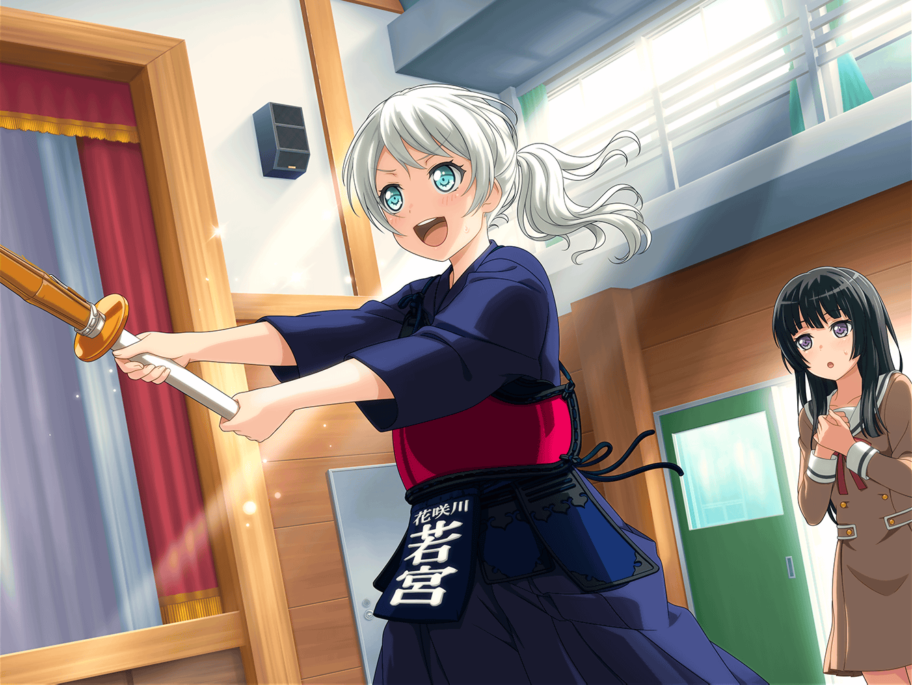

花咲川女子学園 廊下
イヴ
うーん、もうちょっと右にずらしたほうが
いいでしょうか……
？？？
あれ？
イヴ！ こんな所で何やってるの？
イヴ
この声は……
サーヤさん！ それにタエさんも！
たえ
こんにちは、イヴ。
それは……生け花？
イヴ
はい！
華道部の活動で作った生け花を、
廊下に飾っていたんです！
たえ
すごくきれい♪
イヴ、そんな才能があったんだね
沙綾
でも、すごく重そうだし……
イヴ、手伝おうか？
イヴ
い、いえ……！！
これしきの事、武士の鍛錬だと思えば……！！
沙綾
わ……！
い、イヴ！ グラグラしてるよ！ 危ない！
たえ
イヴ、私達も手伝うから
一緒に生け花を飾ろう？
イヴ
す、すみません……っ！
沙綾
これで、よし……っと！
うん、綺麗に飾れたんじゃないかな？
たえ
そうだね。
さっきまで廊下が寂しかったのに、
この生け花のお陰ですごく明るくなった気がする
イヴ
お二人とも、手伝っていただいて
ありがとうございました！
沙綾
いいっていいって。
友達が困ってたら、手伝うのは当たり前でしょ？
たえ
この生け花……イヴが一人で作ったものなの？
イヴ
はい！ 自分でいうのも何ですが、
これは私の自信作なんですっ！
イヴ
部員の作品の中でも、特に優秀なものを
こうして廊下に飾るんですよ
沙綾
へえ〜！
イヴはその優秀作品に選ばれたってことだね。
すごい、すごい！
イヴ
えへへ……ありがとうございます♪
たえ
これは、何をイメージして作ったの？
イヴ
華道は、四季の移ろいや、花そのものが持つ生命力など、
言ってみれば、『自然そのものの美しさ』を表現するものです
イヴ
なので、何かをイメージして作っているとか、
そういうわけではないんですよ
沙綾
じゃあこれは、イヴなりにその、生命力？ とか
自然の美しさ……みたいなのを表現したってことなんだ
たえ
なんだかすごい。
イヴは私よりも日本のこと、詳しい気がする
イヴ
好きこそ物の上手なれ、というやつですよ。
日本の事が好きじゃなかったら、
ここまで色々調べたりはしていなかったと思います
イヴ
お二人で言えば……
バンドが、そうなのではないでしょうか？
沙綾
なるほどなぁ……
確かに、そう言われてみるとそうかもしれないね
たえ
あ……この花、すごくきれい。
この花、なんていう名前か知ってる？
イヴ
これは、テッポウユリですね。
テッポウユリはつぼみを多く使って、
これから花開く生命力を表現しているんです
たえ
そうか〜。
そういう理由でつぼみが多く使われてるんだ。
華道って、考えることが多いんだね
イヴ
言葉だけだと難しく感じるかもしれませんが、
やればやるほど、奥が深いのでとても楽しいですよ♪
沙綾
へぇ～、面白そう！
私もイヴにお花を習おうかな？
イヴ
私が教えるなんてとんでもないです！！
私なんて、まだまだ未熟で修行の身なので！
たえ
私からしたら、イヴはもう師匠だよ。イヴ師匠！
イヴ
い、いえ……そんなことは……あっ！！
沙綾
イヴ？
どうしたの？
イヴ
一つ思い出した事があったんです！
この前、リンコさんが茶道部と剣道部に体験入部してくれたので、
華道部の体験入部も誘おうと思ってたんです！
沙綾
えぇ！？
燐子先輩が茶道部と剣道部に！？
イヴ
それだけではなく、テニス部と弓道部にも
体験入部していましたよ！
たえ
燐子先輩、やる気だね。
すごいな〜
イヴ
特に、弓道部はとてもスゴかったです！
最後の一射を見た時は、
心が震えて思わず叫んでしまいそうでした！
沙綾
そんなにすごかったんだ……
私も見てみたかったなぁ
たえ
そのやる気満々な燐子先輩を、
次は華道部に誘おうとしてるの？
イヴ
ハイ！
その時にぜひ、リンコさんと一緒に、
サーヤさんも華道部に体験入部してみませんか？
沙綾
そうだね。
じゃあ、その時はポピパのメンバーも誘ってみようかな？
イヴ
ぜひ！
みなさんなら、大歓迎です！！